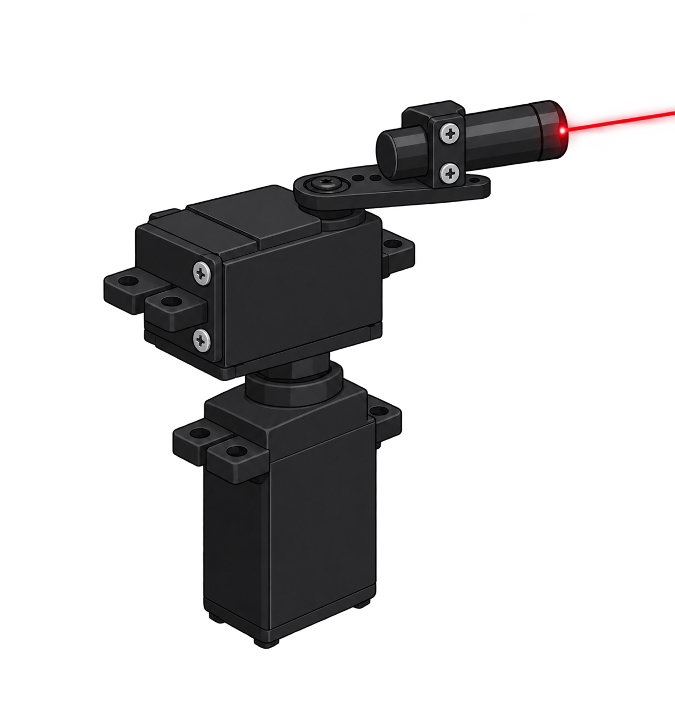

Passo 1 · controllo
Il controllore confronta il riferimento con l'uscita e calcola il segnale di controllo u. È il ciclo di retroazione che mantiene il sistema dove deve stare.
Studio come si comporta un sistema quando qualcosa non va come previsto: guasti, rumore, o qualcuno che prova a manometterlo.
Control systems, automation and the security of what they control.
01 / About
Mi sono laureato in Ingegneria informatica e automatica alla Sapienza, curriculum Automatica. Nel percorso ho affrontato la programmazione e i sistemi di controllo: scrivo il codice per modellare e simulare un sistema, poi verifico che si comporti come previsto. Mi interessa il punto in cui la teoria incontra i sistemi reali. Mi appassionano la computer vision e l'automazione. Prima della laurea ho lavorato un anno come supervisor in un ristorante a Dublino: ho coordinato il team nei turni più intensi, lavorando ogni giorno in inglese.
02 / Thesis
Rilevazione di Zero-Dynamics Attacks tramite Riscalamento degli Attuatori. Laurea triennale, Sapienza.
Passo 1 · controllo
Il controllore confronta il riferimento con l'uscita e calcola il segnale di controllo u. È il ciclo di retroazione che mantiene il sistema dove deve stare.
Passo 2 · attacco
Un attacco zero dynamics si inserisce tra controllore e attuatori e modifica il segnale che arriva all'impianto. Dal punto di vista del controllore, nulla sembra cambiato.
Passo 3 · uscita
L'uscita misurata resta quella nominale. Dal sensore, tutto appare in ordine.
Passo 4 · stato interno
Intanto lo stato interno evolve. Nei sistemi a fase non minima la dinamica zero può diventare instabile, e lo stato può crescere senza lasciare traccia in uscita.
Passo 5 · metodo
La tesi studia il riscalamento degli attuatori come metodo per far emergere l'attacco. Il lavoro combina lo studio della letteratura con simulazioni in MATLAB.
Schema semplificato. Blu: uscita misurata. Arancione: stato interno, non osservabile dall'uscita.
03 / Project
Computer vision laser pointer tracking system · progetto personale
Un laser che segue in continuo un oggetto riconosciuto da una camera. Il riconoscimento è fatto con OpenCV, il movimento con i servomotori, comandati da un Arduino.
Oggetto → Camera → OpenCV → Arduino → Servomotori → Laser
Il risultato è un prototipo funzionante, costruito per esplorare automazione, controllo e tracciamento visivo.
OpenCV · Arduino · Servomotori

04 / Skills
Python, C/C++ e Arduino per modellare, simulare e automatizzare.
Riconoscimento di oggetti con OpenCV, usato per guidare un sistema di puntamento.
Sistemi dinamici, spazio di stato, retroazione e PID.
Simulazione di sistemi di controllo e analisi dei risultati.
Attacchi furtivi, rilevamento, robustezza. È il tema della tesi.
Lettura critica di articoli scientifici e confronto tra metodi.
Lettura di paper e documentazione, comunicazione quotidiana.
Tempi stretti, priorità che cambiano e supporto allo staff.
05 / Path
v0.1
2022 – 2023
Supervisione delle attività quotidiane in un ristorante internazionale: coordinamento del team, qualità del servizio e gestione dei turni più intensi.
v1.0
2023 – 2026
Ingegneria informatica e automatica, curriculum Automatica. Programmazione, sistemi di controllo, simulazione.
v1.1
2026
Rilevazione tramite riscalamento degli attuatori. Studio della letteratura e simulazioni in MATLAB.
next
in arrivo
Aperto a ruoli e progetti in automazione, controllo e sicurezza dei sistemi.
06 / Contact
Se ti serve qualcuno che capisce perché un sistema si comporta in modo strano, o che sa spiegarlo bene, scrivimi.